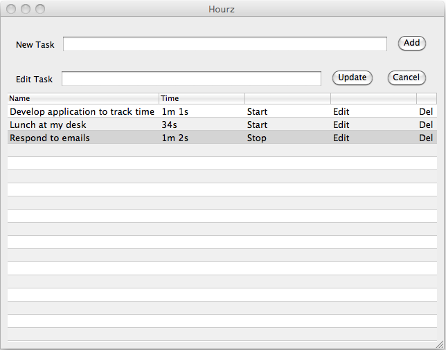

Hourz
A simple open-source Mac OS X application to help keep track of time spent on various tasks.Downloads
If upgrading from a previous version: remove the old version from Applications before attempting to overwrite it. If upgrading from Hourz v1.0, please remove the old /hours.dat and /hours.bak files to avoid errors and issues with data persistence to file. Data persistence to file is fixed in this version. Download Hourz 1.1 (You have to scroll down to get to the link, and then after clicking on it, you have to scroll down again and wait. Their site is full of ads, sorry.) All ReleasesSystem Requirements
Was developed and tested in OS X 10.6.2. Unfortunately the application is extremely large compared to its functionality (152.5 MB on disk).Screenshots
Support
- Supported on a volunteer-basis.
- See project page for known issues.
- Submit an issue if you need assistance.
Source
This project is kindly hosted at GitHub:http://github.com/garysweaver/hourz
Logo
Used Seashore to create the Hourz logo. Used Img2icns to create the .icns.Copyright © 2010 Gary S. Weaver, released under the MIT license.